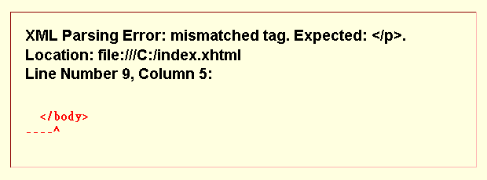

In a Perfect World:
Why Media Source Extensions are Hard
David LaPalomento, Brightcove
What is Media Source Extensions?
Buffering is now part of user-space

MSE is the Future
- Progressive download is wasteful
- Progressive download is a worse end-user experience
- Progressive download is an innovation dead-end
MSE is persnickety
Continuity
Bridging the Gaps
- Insert blank frames
- Gap skipper
MSE is tight-lipped
MEDIA_ERR_DECODE
MSE is easily flustered
A trip down memory lane
All errors are fatal
- Reconstruct the video element, media source, and source buffers
- Probe and validate media data before appending
- Re-transcode all your content
How can MSE be improved?
- Play through content gaps (issue #160)
- Create runtime inspection APIs (kind of issue #35)
- Error recovery (issue #36)